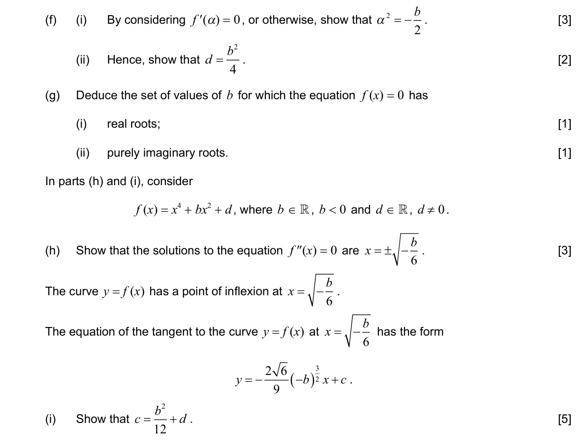
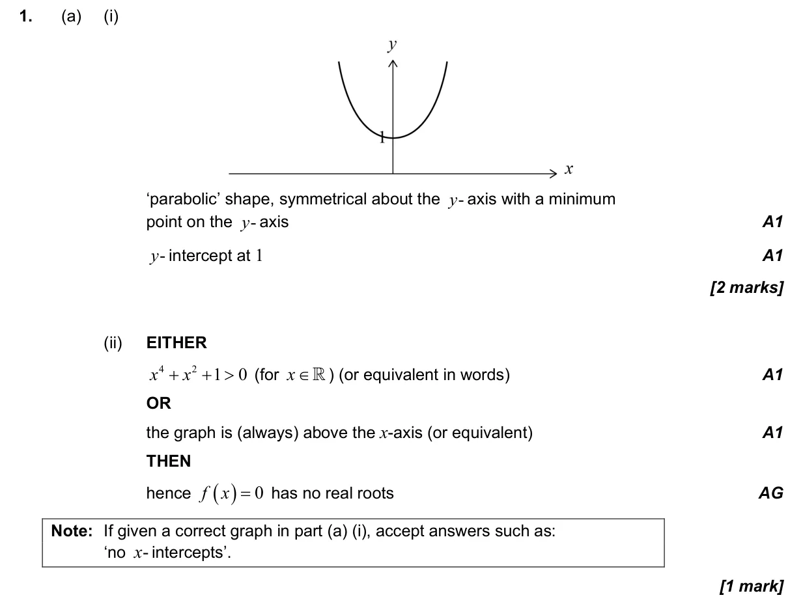
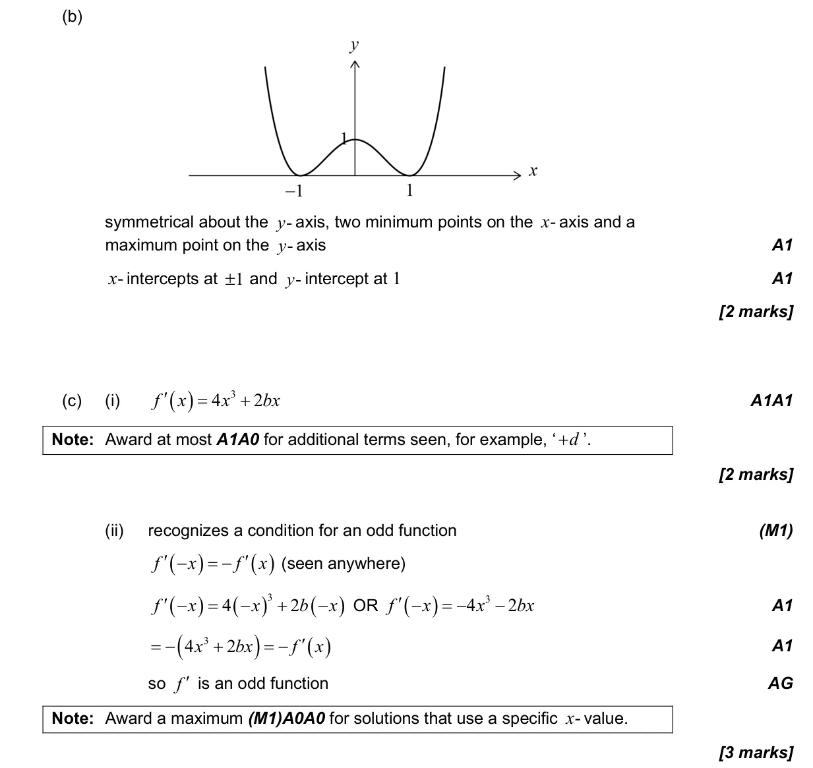
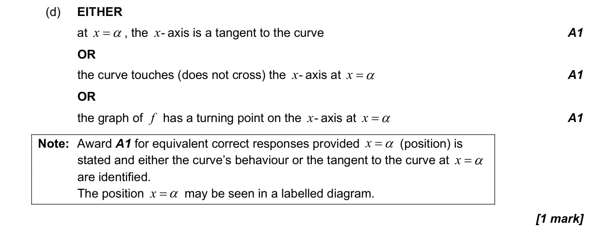
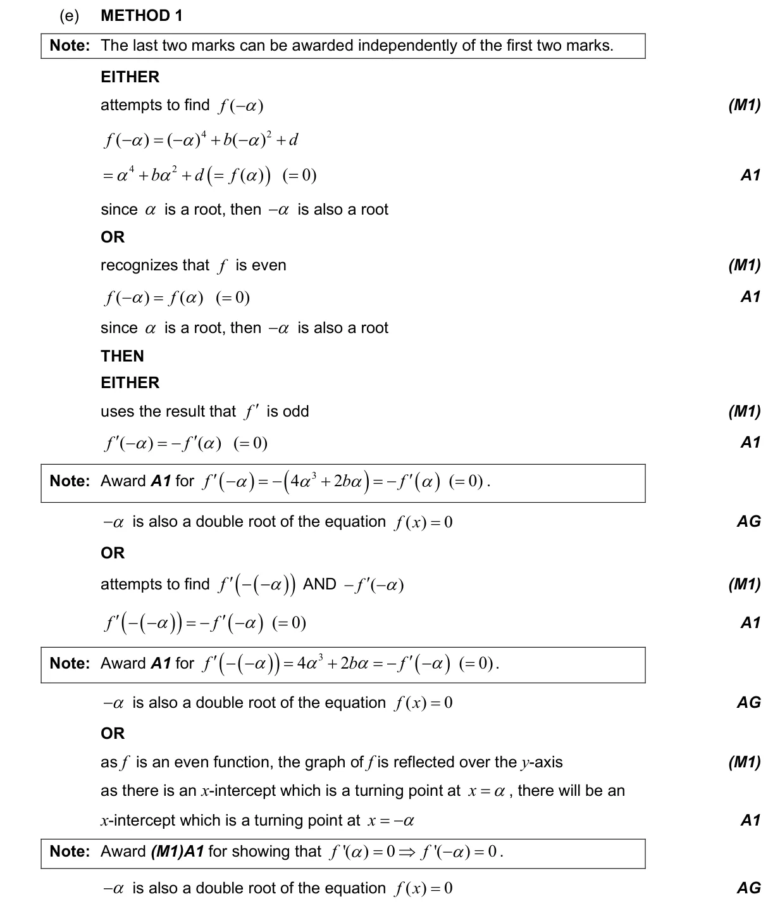
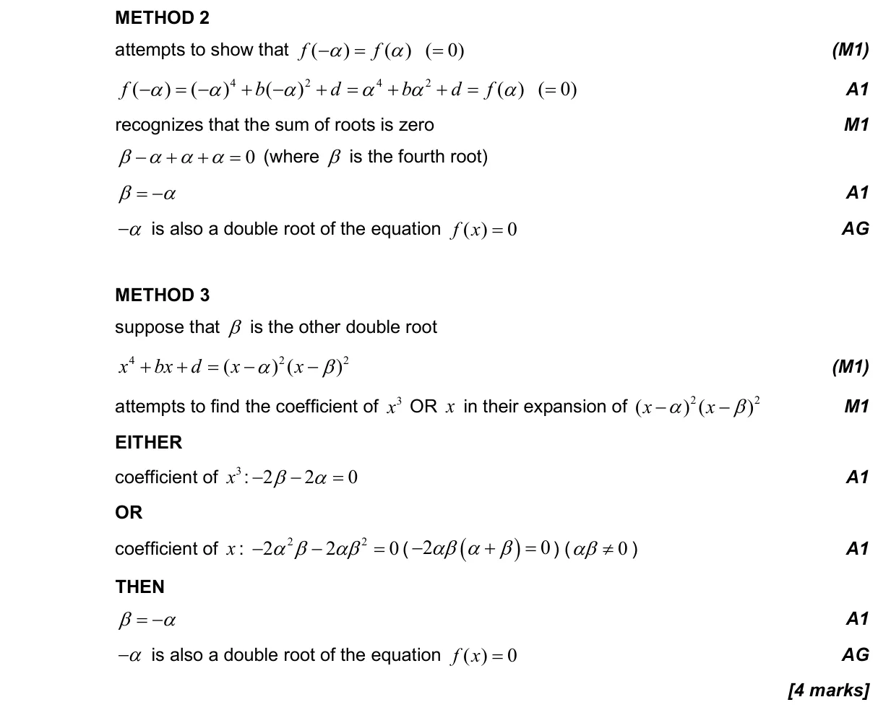
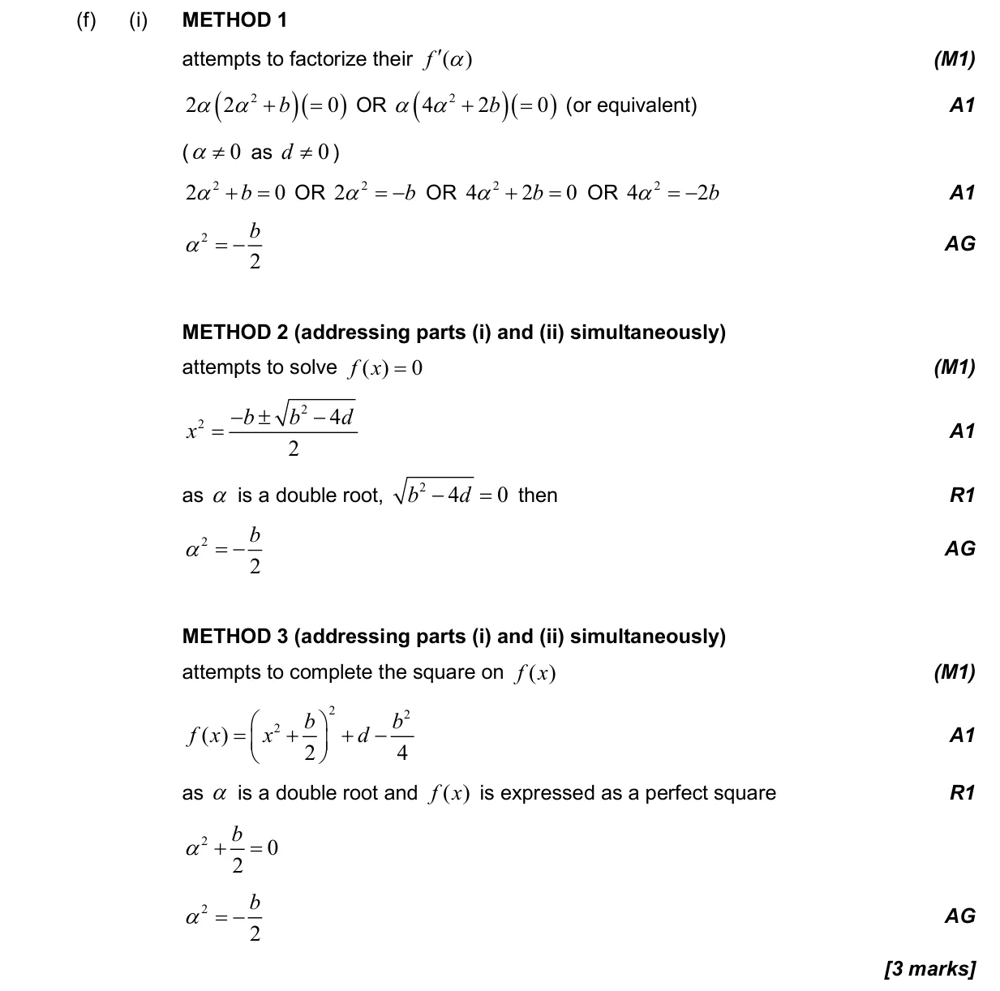
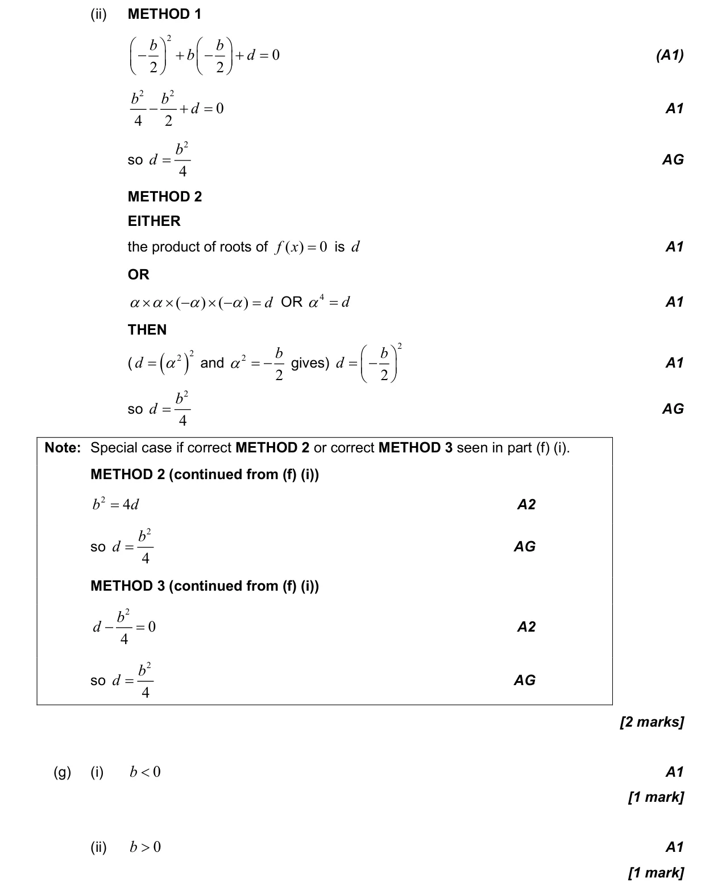
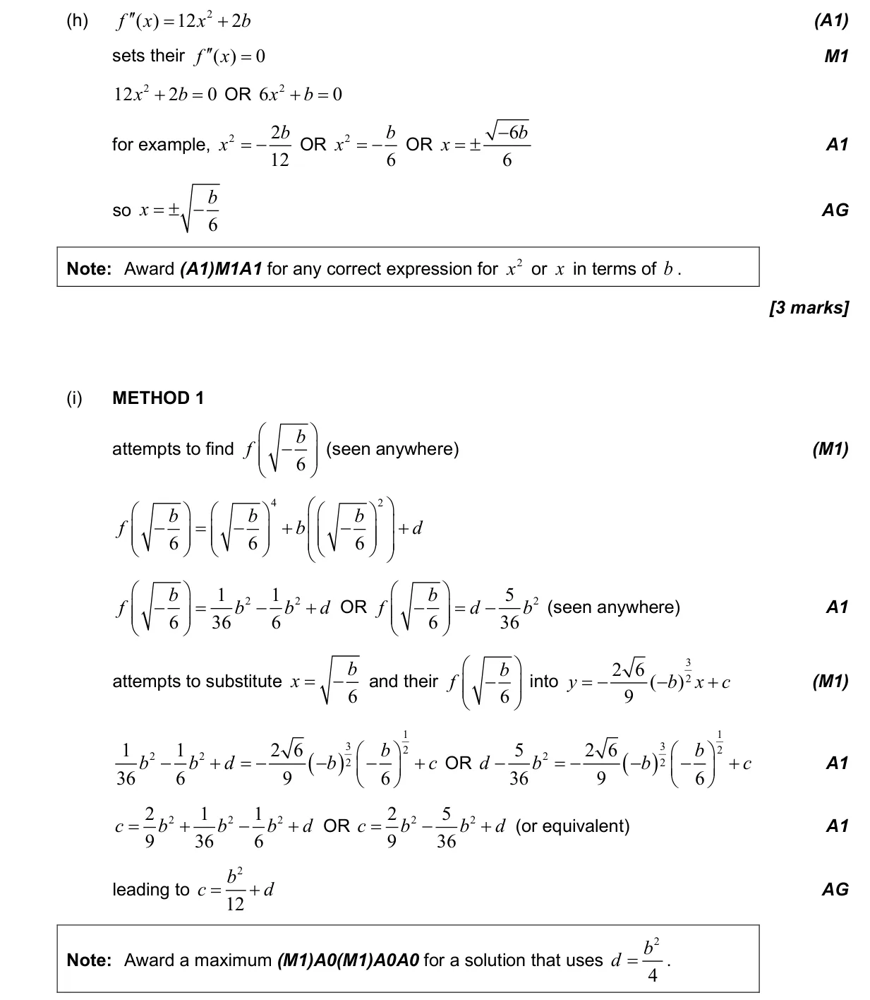
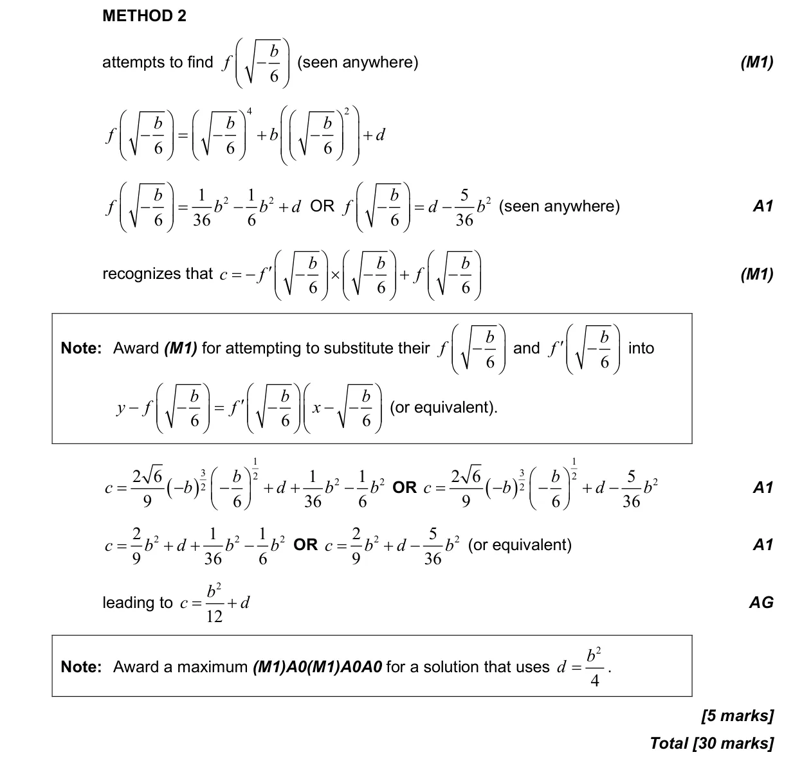

2.12 Polynomial functions: factor and remainder theorems, sum and product of roots2.14 Odd and even functions, inverses with a restricted domain, self-inverse functions5.4 Tangents and normals5.8 Optimization, local extrema and points of inflexion2.3 Graphs of functions5.3 Differentiating polynomials, n in Z5.7 The second derivative1.12 Complex numbers in Cartesian form and the complex plane
Question


Markscheme








